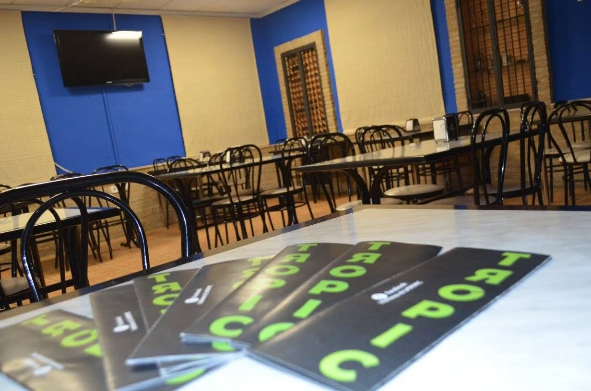
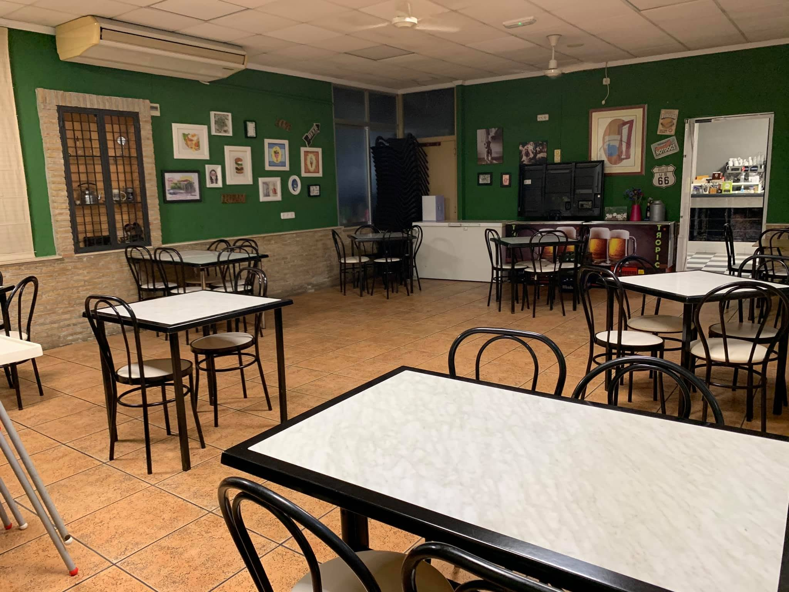

Horario habitual
- Lunes, miércoles, jueves y viernes
- 9:00–12:30 (desayunos y almuerzos)
20:00–23:30 (cenas) - Sábados y domingos
- 20:00–23:30
- Martes
- Cerrado
El horario puede variar en festivos o por cierre vacacional, habitualmente en agosto.
Prueba con «queso», «bravas», «calamares», «barbacoa» o «cerveza».


El horario puede variar en festivos o por cierre vacacional, habitualmente en agosto.
Local clásico y familiar en La Alberca. También preparamos pedidos para llevar.